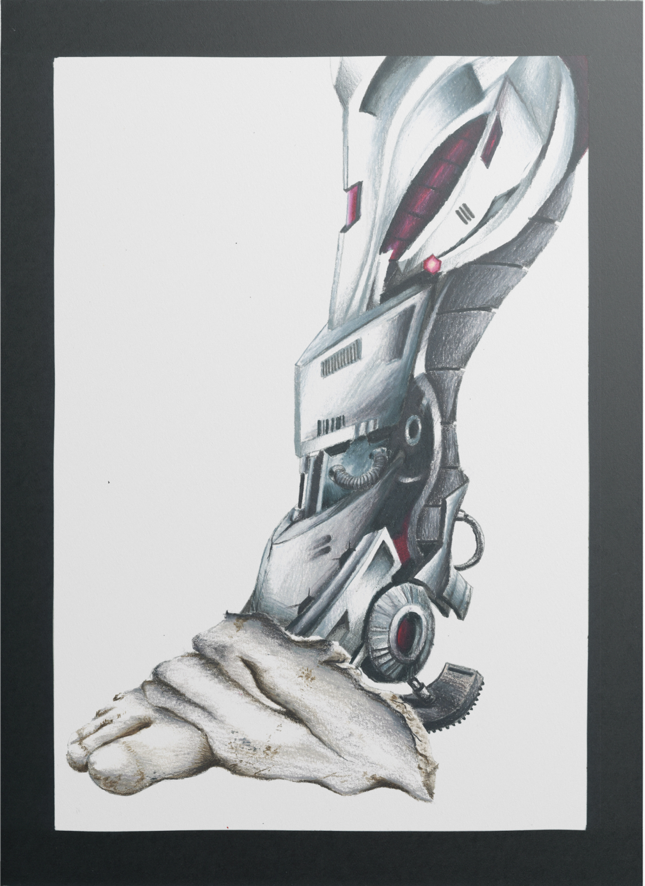
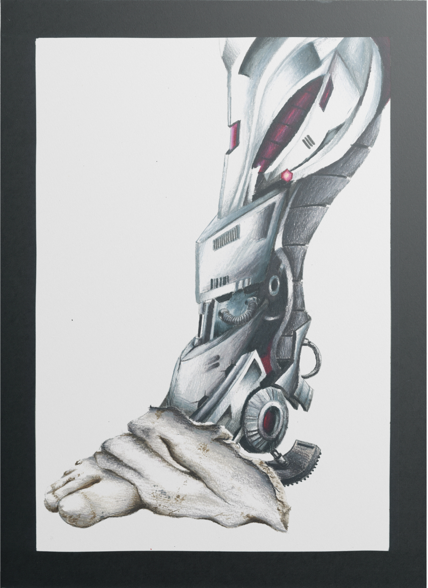

Dessin
Mise en situation de plâtres dans un contexte nouveau
Crayon de couleur
La plupart des plâtres représentant des humains sont incomplets et l’objectif premier de mon travail était de leur rendre les membres qui leur font défaut. Les plâtres ont une connotation historique voire antique a laquelle j’ai fait le choix d’opposer la modernité de la mécanique robotique. Ce travail reflète ma vision du transhumanisme et de la direction que prend la société vers un futur enclin à l’usage d’optimisations cybernétiques. J’ai fait le choix d’un traitement le plus proche possible du réel pour rendre cette rupture encore plus saisissante et paradoxalement, rendre les plâtres plus vivants.


 
